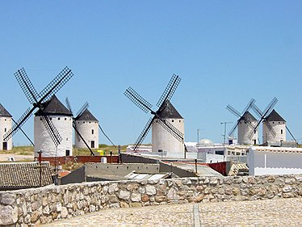
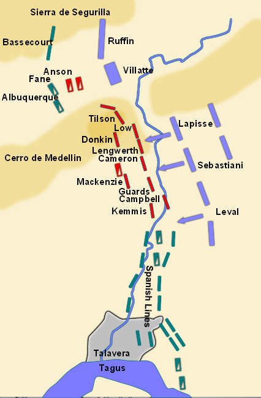
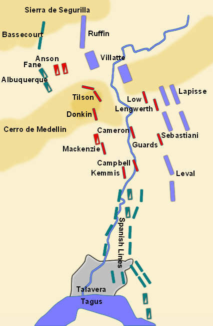
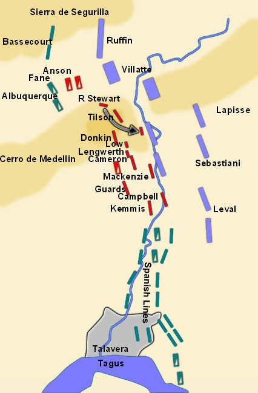
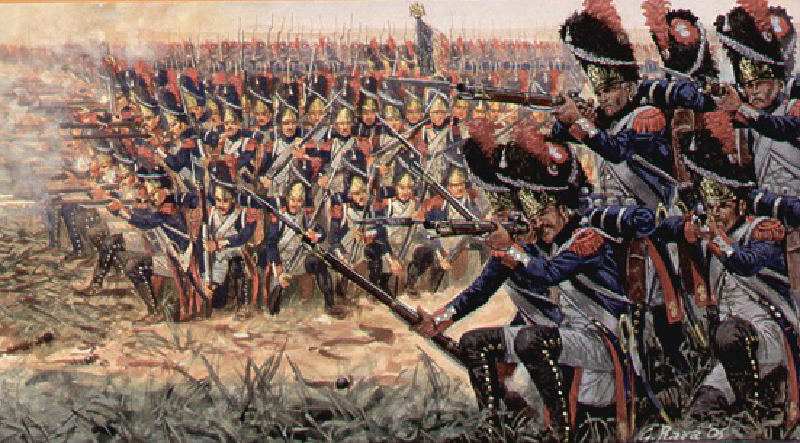

혈전 - 탈라베라 전투 (제5편)
게시: 2018-03-25T18:56:00+09:00
조제프와 함께 작전 회의 중이던 프랑스 장군들에게 전해진 소식 중 하나는 주르당이 목이 빠져라 기다리던 술트로부터 온 것이었습니다. 술트가 보내온 장계의 내용은 그의 남쪽으로의 행군 현황에 대한 것이었는데, 그 진척이 주르당의 기대에는 크게 미치지 못하는 것이었습니다. 나머지 소식은 조제프와 주르당이 떠나온 마드리드에서 온 것이었습니다. 내용은 술트의 소식보다 더 나빴습니다. 세바스티아니 장군의 제4 군단과 대치하던 베네가스 장군의 스페인 라 만차(La Mancha) 군이 마드리드 방향으로 접근하고 있다는 소식이었습니다. 원래 베네가스의 임무는 세바스티아니가 탈라베라에서 빅토르와 합류하지 못하도록 세바스티아니를 붙들고 늘어지는 것이었습니다. 그 임무에 보기 좋게 실패한 베네가스가 한동안 가만히 있다가, 자신과 마드리드 사이에 프랑스군이 전혀 없다는 사실을 깨닫고는 그 쪽 방향으로 슬금슬금 움직였던 것입니다.
일이 이렇게 되자 난처해진 것은 조제프와 주르당이었습니다. 그들, 정확하게는 주르당이 주장했던 것이 '며칠 가만히 자리를 지키고만 있어도 술트가 북쪽에 나타나면 영국군은 무너지게 되어있다'는 것이었는데, 이제 며칠이 아니라 10일 가까이를 기다려야 할 상황이 된 것입니다. 뭐 한가한 상황이라면 그것도 나쁘진 않을 수 있었습니다. 그러나 자신들이 텅 비워두고 온 마드리드가 스페인 라 만차 군에게 위협받는 상황까지 겹치자, 술트가 올 때까지 마냥 기다릴 수가 없게 되었지요. 특히 빅토르나 세바스티아니가 굳이 부른 것도 아니었는데, 스페인 국왕과 그의 군사 고문의 위엄을 세우겠다며 마드리드 수비대까지 다 끌고 탈라베라로 달려온 것은 바로 자신들이었습니다. 이 위기는 바로 조제프와 주르당 본인들이 만든 것이나 다름 없었습니다.

(라 만차 La Mancha는 마드리드 바로 남쪽 지방으로서, 원래 라 만차라는 이름은 메마른 땅이라는 뜻의 아랍어 알 만샤 Al-mansha에서 왔다고 합니다. 이름과는 다소 어울리지 않게 라 만차는 나름대로 비옥한 축에 속하는 지역이라, 사진에서 보시는 바와 같이 전통적으로 곡식을 제분하기 위한 풍차가 꽤 많았습니다. 라 만차의 사나이 돈키호테가 풍차를 향해 돌격한 것도 다 이유가 있는 것입니다.)
이런 상황 속에서 조제프와 주르당은 빅토르가 주장하는 대로 공격에 나설 수 밖에 없었습니다. 빅토르는 여전히 자신이 공을 독차지 하겠다는 의도를 분명히 했습니다. 프랑스군의 공격은 크게 4갈래로 편성되었는데, 그 중 3개 공격을 빅토르의 3개 사단이 각각 맡았고, 나머지 1개만 세바스티아니의 사단들이 맡았습니다. 어제 밤과 오늘 새벽에 영국군을 공격했다가 큰 피해를 입었던 루팽 사단이 메데진 언덕과 세구리야 산맥 사이의 계곡을 공격하기로 했고, 빌라트(Eugene-Casimir Villatte) 사단이 그 왼쪽을 맡았습니다. 그리고 라피스(Pierre Belon Lapisse) 사단이 그 왼쪽, 그러니까 메데진 언덕 남쪽 사면을 공격하기로 했습니다. 이번에는 이렇게 메데진 언덕의 동쪽 경사면을 그대로 들이치는 것이 아니라, 이 언덕의 북쪽과 남쪽의 양갈래로 공격해들어가 남북 양쪽 사면을 협박하기로 했습니다. 그리고 세바스티아니 휘하에 있던 사단들은 영국군과 스페인군의 방어선이 맞닿는 연결부를 공격하기로 했습니다. 세바스티아니의 공격은 빅토르가 요청했던 유인 공격에 불과했습니다. 즉, 세바스티아니의 사단들이 먼저 영국군 방어선 남쪽을 공격하여 소란을 일으켜주면, 빅토르의 사단들이 메데진 언덕을 집중 공격하여 함락시키는 것이 큰 그림이었습니다.
요약하면, 빅토르가 하자고 하는 작전 그대로 하게 된 것입니다. 조제프와 주르당이 이끄는 병력은 무엇을 하냐고요 ? 어떤 공격에서든 전병력을 일거에 쏟아붓는 일은 없습니다. 조제프와 주르당의 기병대 및 마드리드 수비대는 예비대로 남겨 두었다가 상황에 따라 투입하기로 했습니다.

(7월 28일 오후 프랑스군의 제3차 공격의 초기 전개도입니다. 보시다시피 이번에는 프랑스군도 긴 횡대로 전열을 짜고 공격했는데, 올리브 밭 한가운데를 뚫고 나가야 했던 레발 사단에게 긴 횡대를 유지하는 것은 결코 쉬운 일이 아니었습니다.)
프랑스군의 공격은 오후 2시반 경에 시작되었습니다. 가장 먼저 공격에 나선 것은 세바스티아니 휘하에 있던 레발(Jean Francois Leval) 장군의 사단이었습니다. 그의 사단은 독일군과 네덜란드군으로 이루어진 약 4500 규모의 부대였는데, 이들의 공격이 가장 먼저 시작된 것은 사실 의도된 바가 아니라 일종의 작은 사고였습니다. 원래 그의 공격 순서는 두번째였는데, 웰슬리가 판단한 것처럼 꽤 거추장스러운 장애물인 올리브 밭을 통과하느라 그의 사단은 다른 프랑스 사단들과 보조를 맞추지 못하고 먼저 개활지로 나와 버렸던 것입니다. 개활지 앞에는 영국군 방어선과 스페인군 방어선이 합류하는 지점이 있었고, 거기에는 영국군이 구축해놓은 포병대 보루가 있었습니다. 이왕 이렇게 된 김에 더 이상 공격을 늦출 수 없었던 레발 장군은 곧장 공격에 들어갔으나, 결과가 좋지 못했습니다. 올리브 밭을 통과하느라 대오도 헝클어져 있었고 특히 영국군 포병대 보루 정면으로 쳐들어간 것이 주요 패인이었습니다. 레발 사단의 우익은 영국군을, 좌익은 스페인군을 공격했는데, 우익과 중앙이 영국군에게 격파 당해 후퇴하자, 스페인군을 상대하던 좌익도 측면 노출을 우려하여 후퇴할 수 밖에 없었습니다. 여기서 레발 사단은 약 700명의 사상자를 냈습니다.
우익에서 레발 사단의 공격이 시작되자 중앙을 맡은 세바스티아니와 라피스의 공격도 시작되었습니다. 약 1만5천 규모의 프랑스군 2개 사단은 제1파와 제2파로 나뉘어 간격을 두고 공격해들어갔습니다. 이들을 상대한 것은 약 6천 규모의 영국군 셔브룩(Sherbrooke) 장군의 사단이었습니다. 영국군은 특유의 침착성을 발휘하여 프랑스군 제1파가 가까이 접근할 때까지 기다리다 45m 지점까지 다가오자 무자비한 일제 사격을 퍼부었습니다. 뼈와 살로 이루어진 인간의 파도는 지근거리에서 쏟아진 6천발의 총알을 당해낼 수 없었습니다. 프랑스군의 진격이 멈칫하자 셔브룩 사단은 총검 돌격을 감행했고, 그것으로 끝이었습니다. 프랑스군은 영국군의 총검 맛 보기를 사양하고 뒤돌아 도망쳤습니다. 그러나 역시 영국군도 아직 실전 경험이 적어서 그랬는지, 그만 침착함을 잊고 도망치는 프랑스군을 대오도 갖추지 않고 무질서하게 추격하는 실수를 저질렀습니다. 총 8개 대대 중 6개 대대가 이렇게 신이 나서 추격에 참여했다가 그만 뒤를 이어 다가오던 프랑스군 제2파와 딱 마주치고 말았습니다. 이번에는 반대로 영국군이 파도에 부서지는 모래성처럼 무너져 내렸고, 영국군 방어선 중앙부가 무너질 지경에 이르렀습니다. 이때가 이날 전투에서 영국군의 최대 위기 상황이었습니다. 설상가상으로, 이렇게 영국군에 위기가 닥치자 아까 후퇴했던 레발 사단도 다시 중앙부로 진격해왔습니다.

(전투가 한창 뜨거워질 때의 모습입니다. 영국군 중앙부 셔브룩 장군 휘하 일부 여단들이 전선을 유지하지 않고 무질서하게 앞으로 나가 있는 것을 보실 수 있습니다. 전진한 여단 지휘관들의 이름이 로우 Low와 렝워쓰 Lengwerth라고 되어 있는데, 저 분들의 이름은 사실 뢰브(Sigismund von Löw)와 랑베르트(Ernst von Langwerth)입니다. 저렇게 전진한 여단들은 하노버 출신들로 이루어진 KGL 여단들이고 그 지휘관들도 독일인이었던 것입니다. 특히 랑베르트 장군의 제3 여단은 큰 피해를 입어 사상자가 거의 절반에 달했고, 랑베르트 장군도 전사했습니다.)
예비대로 있던 매켄지(Alexander Randoll Mackenzie) 사단이 재빨리 세바스티아니 사단을 막아섰으나, 라피스 사단을 막아설 예비대는 아예 없었습니다. 이 위기 속에서 웰슬리는 메데진 언덕을 지키던 연대 하나를 내려보내 간신히 구멍을 메웠습니다. 이 사이 셔브룩 사단이 후퇴 및 재정비에 나섰고, 다시 방어에 투입되면서 위기를 수습할 수 있었습니다. 하지만 2300명의 매켄지 사단이 8000명 규모의 세바스티아니 사단을 막으려니 영국군도 피해가 컸습니다. 매켄지 장군 자신이 전사했고, 그 사단도 전체의 1/4이 넘는 630명의 사상자를 냈습니다. 그래도 영국군의 머스켓 사격 속도는 확실히 프랑스군보다 우세했습니다. 세바스티아니 사단도 피해가 막심하여 무려 2천이 넘는 사상자를 남기고 결국 후퇴해야 했던 것입니다. 라피스 사단도 상황이 비슷했습니다. 이들은 영국군과 평행선으로 나란히 늘어서 정지 상태에서 총격전을 벌였는데, 서로 비슷한 사상자를 낸 뒤 후퇴한 쪽은 라피스 사단 측이었습니다. 라피스 장군이 선두에서 지휘하다 총격을 받고 전사한데다, 측면에 있던 세바스티아니 사단이 후퇴했기 때문이었습니다. 여기서는 영국군이나 프랑스군이나 약 1600명씩의 사상자를 냈습니다.

(웰슬리가 필사적으로 구멍을 틀어막는 모습입니다. 그림에서 메데진 언덕을 지키던 스튜워트(Richard Stewart) 장군의 부대가 헐레벌떡 내려가 라피스 사단을 막는 것이 보입니다. 그러나 덕분에, 메데진 언덕 북쪽의 계곡으로 들어오는 빌라트와 루팽의 프랑스군을 막을 부대가 부족해지는 일이 벌어졌습니다.)
일이 이렇게 되자 밥상에 숟가락을 슬며시 올려놓으려던 중앙부의 레발 사단은 입장이 더욱 난처해졌습니다. 결국 이들은 경멸해마지 않던 스페인군 기병대의 추격을 받으며 걸음을 날살려라 도망치는 수모를 겪어야 했습니다. 그리고 조제프와 주르당도 입장이 난처해졌습니다. 이들은 약 5천 병력을 예비대로 가지고 있었는데, 이때 아무 것도 하지 않고 그냥 이 상황을 바라만 보고 있었습니다. 훗날 이들은 나폴레옹으로부터 '명색이 총사령관이라는 사람이 그런 상황에서 예비대를 가지고 뭘 하고 있었나'라는 질책을 들어야 했습니다.
프랑스 좌익과 중앙에서의 공격이 이렇게 실패로 돌아가자, 원래의 주공이었던 전선 북쪽 끝 빌라트와 루팽 사단의 공격은 매우 어정쩡해졌습니다. 원래는 메데진 언덕을 남북 양쪽에서 둘러싸며 공격하기로 했었는데, 남쪽에서 그렇게 해줄 라피스 사단이 맥없이 무너졌기 때문이었습니다. 그래도 이들은 일단 메데진 언덕과 그 북쪽 세구리야 산맥 사이의 계곡으로 진입을 시도했습니다. 언덕 위에서 전황을 관측하던 웰슬리는 프랑스군이 자신의 방어선을 북쪽에서 우회하려는 것을 쉽게 알아챘습니다. 기병대 외에는 이 계곡에 투입할 병력이 부족했던 웰슬리는 쿠에스타 장군에게 급히 지원을 요청했고, 프랑스군의 공격선상에서 벗어나 있던 스페인군은 그에 적극적으로 응해 기병대와 보병대를 급파해주었습니다. 그 결과 빌라트와 루팽 사단이 계곡 속으로 진입했을 때는 스페인 보병만 아직 현장에 도착하지 않았을 뿐 영국-스페인 기병대는 시퍼런 기병도를 뽑아들고 프랑스군을 요격할 준비를 갖춘 상태였습니다.

(프랑스군의 밀집 보병 방진입니다. 기병대의 공격에 대해서는 견고했겠지만, 대신 포병대의 묵직한 대포알에는 세상 취약했습니다. 때문에 아군 기병이나 포병의 지원이 없는 상태에서 적군의 기병과 포병의 합동 공격에 걸리면 끝장이었지요. 그림 출처 : https://boardgamegeek.com/thread/1437964/beautiful-world-napoleonics)
프랑스군은 좁은 계곡 속에서 마주친 기병대에 맞서 방진(square)를 짜야 했는데, 이건 역으로 프랑스군이 사지 속으로 제발로 들어온 형국을 만들어버렸습니다. 보병 방진을 기병대에 대해서는 매우 튼튼한 방어진 역할을 할 수 있었으나, 약점이 2가지 있었습니다. 하나는 방진 특성상 이동이 아무래도 어렵다는 점이었고, 나머지 하나는 이런 밀집 보병 대오는 포병대의 포격에 매우 취약하다는 점이었습니다. 그런데, 메데진 언덕 꼭대기에는 영국군 포병대가 있었고, 이들은 계곡 아래 프랑스군이 방진을 짜는 것을 보고 신이 나서 대포알을 날려보내기 시작했습니다. 빌라트와 루팽의 프랑스 사단들은 이 좁은 계곡 속에서 꼼짝도 못하고 제자리에 서서 대포밥이 될 신세였습니다. 게다가, 이들은 아직 모르고 있었으나 바세쿠르트(L. A. Bassecourt) 장군이 이끄는 스페인 보병 사단이 이 계곡으로 달려오고 있었습니다.
하지만, 이제 독안에 든 쥐 신세로 죽는 일만 남았던 프랑스군이 기적적으로 목숨을 건지는 사건이 연이어 터집니다.
Source : http://lamejortierradecastilla.com/la-batalla-de-talavera-y-2-la-sangre-corre-en-la-portina/
https://www.bbc.co.uk/radio4/wellington/talavera_pop.shtml
https://en.wikipedia.org/wiki/Jean-Baptiste_Jourdan
http://www.worcestershireregiment.com/wr.php?main=inc/h_talavera
http://www.napoleon-series.org/military/battles/1809/Peninsula/talavera/c_talaveraoob.html
http://www.historyofwar.org/articles/battles_talavera.html
http://www.historyofwar.org/articles/campaign_talavera.html
https://en.wikipedia.org/wiki/Battle_of_Talavera